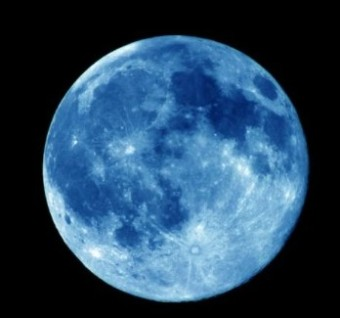
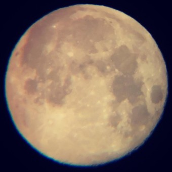

TODAY 28 │ TOTAL 234918

달님이예요 홈페이지
http://homepage...
Red moon
달이 지구의 그림자에 완전히 가려 태양 빛을 받지 못하고 어둡게 보이는 현상인 개기월식 때, 지구에서 달의 색깔이 붉게 보이는 것을 말한다. ‘블러드문(blood moon)’ 또는 ‘적월(赤月) 현상’이라고도 한다. 달이 지구 주위를 돌다가 ‘태양-지구-달’ 순서로 일직선에 놓이게 되면, 달은 지구의 그림자에 가려서 태양 빛을 받지 못하게 된다. 그러나 태양 빛이 완전히 차단되는 것은 아니고 태양 빛 중 파장이 긴 붉은빛은 지구를 거쳐서 달에 전달된다. 즉, 태양 빛이 지구의 대기를 통과하면서 파장이 짧은 푸른빛은 대부분 흩어지나, 파장이 긴 붉은빛은 지구의 대기권을 통과하여 지구의 그림자 뒤에 있는 달까지 전달된다. 이 붉은빛을 받아 달이 지구에서 붉게 보이는 것이다. 지구의 대기 구성에 따라 달이 주황색, 갈색 등으로 보일 수 있다.
Blue moon

달의 공전 주기는 27.3일로 양력 한 달보다 짧아서 월초에 보름달이 뜨고 같은 달 30, 31일에 또 달이 뜨는 경우가 있는데, 이때 뜨는 달을 블루문이라고 한다. 블루문이라고 부르는 이유는 다양한 설이 있으나 가장 설득력 있는 것은 belewe에서 유래되었다는 설이다. belewe는 '배신하다'는 의미를 가진, 지금은 사라진 영어 단어인데 서양에서는 보름달이 한 달에 두 번 뜨는 것을 불길하다고 여겨 배신자 달이라는 의미로 사용했다는 것이다.
Super moon

달이 지구를 타원형 궤도로 공전하다 지구와 가장 가까워졌을 때 보름달이 뜰 경우 평소보다 밝고 크게 보이는 현상을 슈퍼문이라고 한다. 지구와 달 사이의 평균 거리는 38만 4000km 정도인데 슈퍼문은 35만 7000km로 가까워 질 경우(근지점) 뜬다. 천문학에서 사용하는 용어는 아니며 1979년 한 점성술사가 만든 용어라고 알려져 있다. 슈퍼문이 나타날 때에는 지구와 달 사이의 거리가 짧아지기 때문에 달이 지구의 바닷물을 끌어당기는 인력이 커져 밀물과 썰물 차가 평소보다 19% 벌어진다. 그러나 지진, 해일 등 여타 자연재해와는 무관한 것으로 밝혀졌다. 반면 달과 지구 사이의 거리가 40만 6000km가량 떨어질 때(원지점)는 보름달이 평소보다 작게 보이는데, 이것을 '미니문(mini moon)' 또는 '마이크로문(Micro Moon)'이라고 부른다. 슈퍼문은 미니문보다 30%가량 더 밝고 13% 정도 더 크게 보인다.